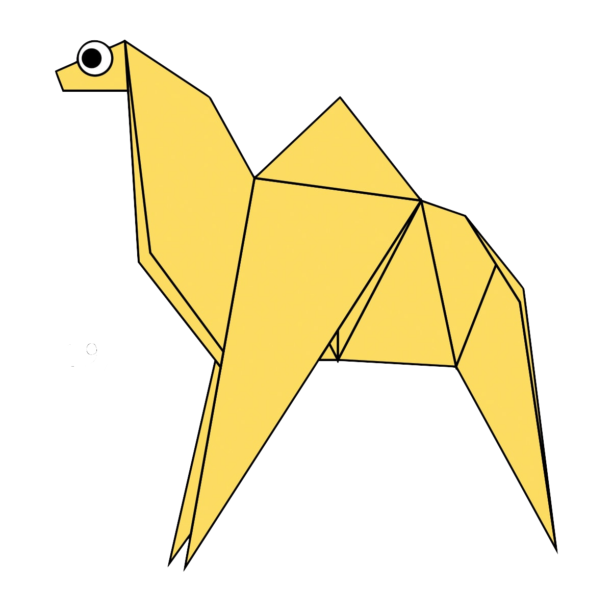
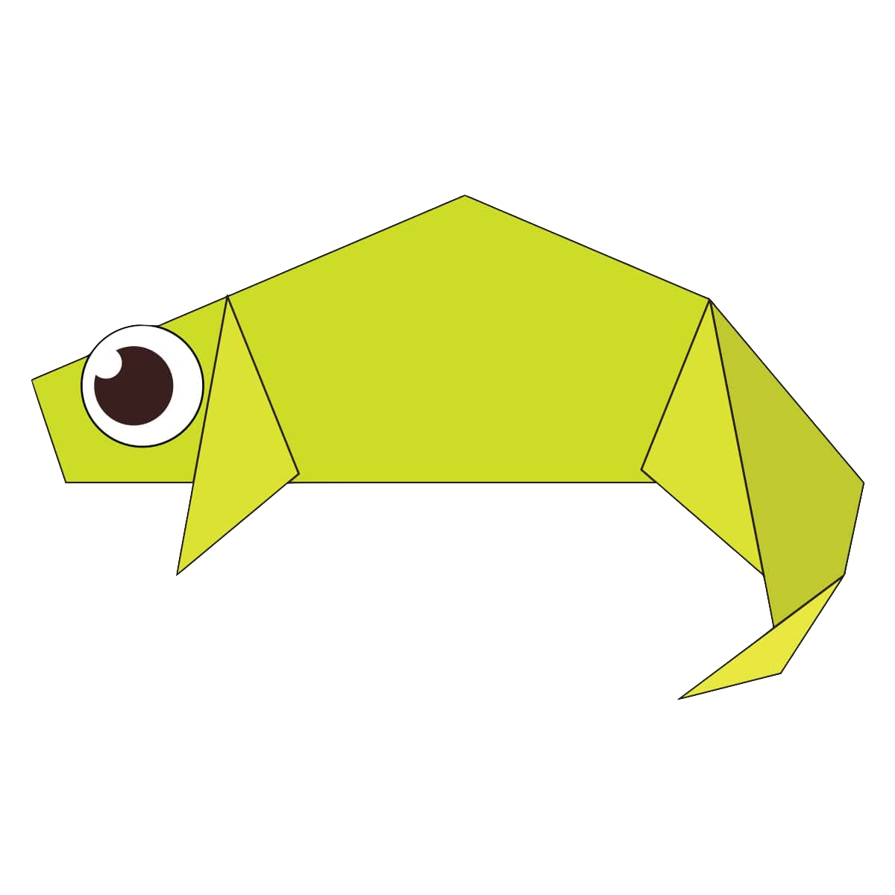
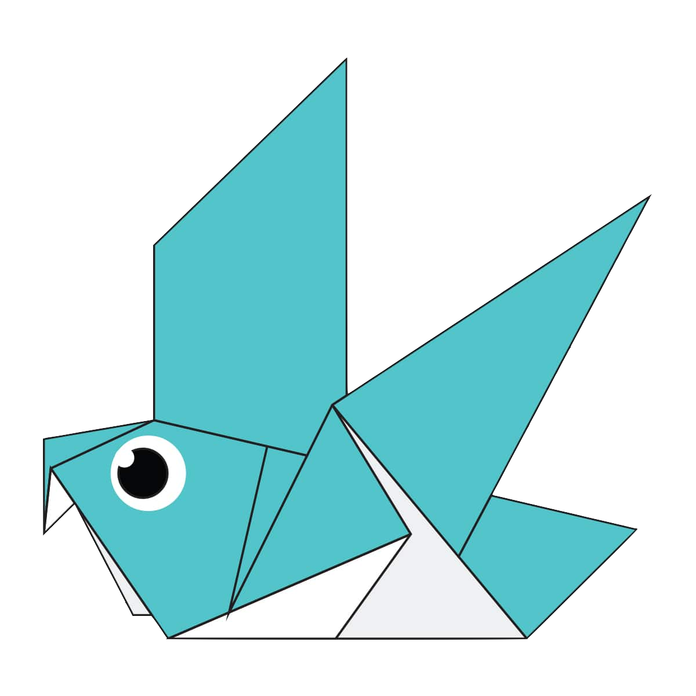
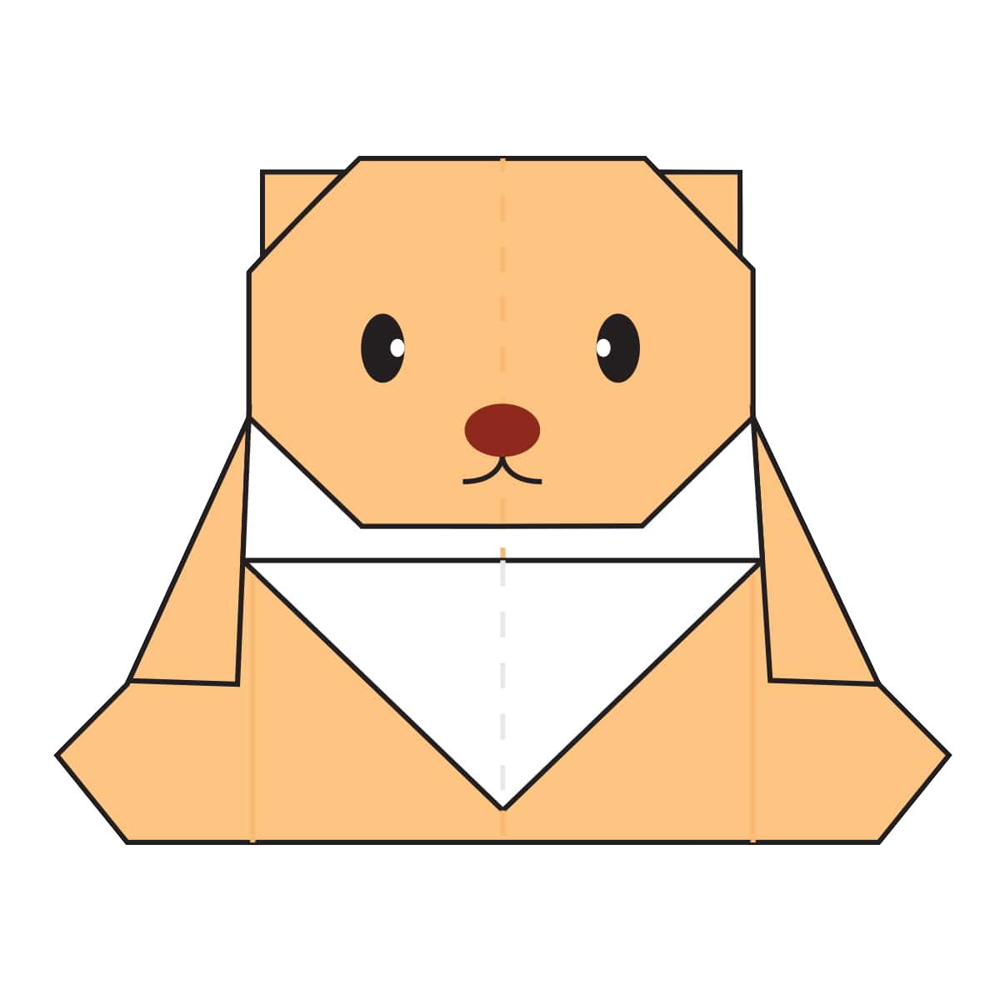
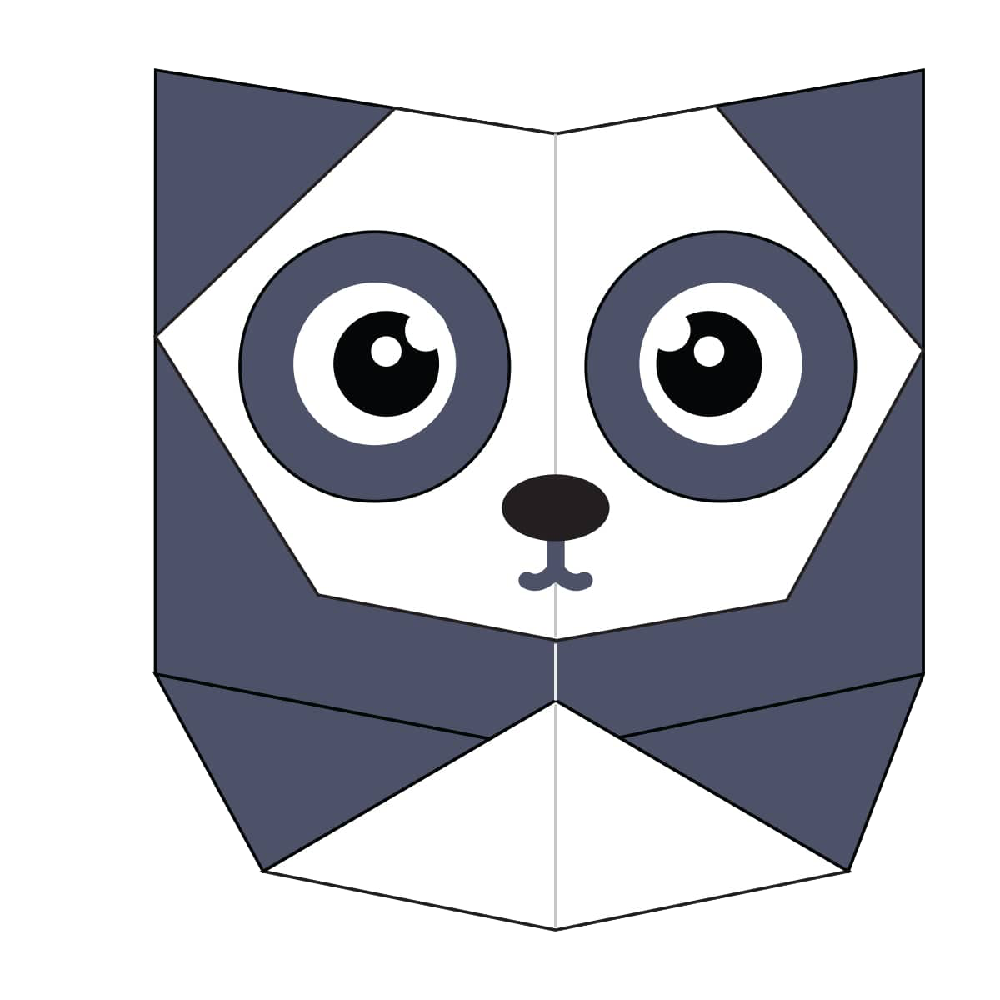
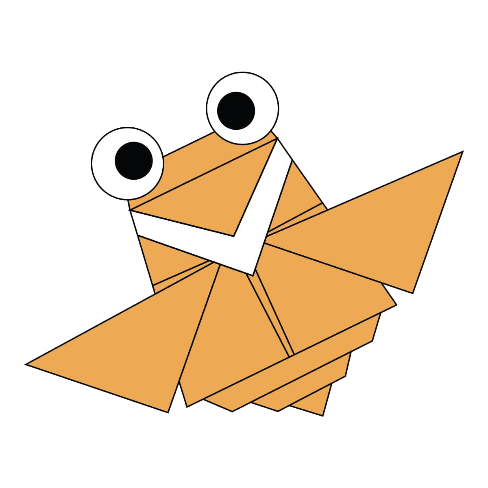

About us
Follow us
Origami Designs

How To Make A Camel
Interesting facts about camels
- There are two types of camels: One humped or “dromedary” camels and two humped Bactrian camels
- Camels have three sets of eyelids and two rows of eyelashes to keep sand out of their eyes.
- Camels have thick lips which let them forage for thorny plants other animals can't eat.
How to make a Chameleon

Interesting facts about chameleons
- Almost half of all known species live in Madagascar
- They mainly change colour in order to communicate or regulate body temperature.
- Their eyes can swivel around in two directions simeltaneously.
How to make a Pigeon

Interesting facts about pigeons
- THhey might be the first domesticated bird.
- They can find their way back to the nest from 1300 miles away.
- They saved thousands of human lives in World wars 1 & 2.
How to make a Teddy Bear

Interesting facts about Teddy Bears
- In 1902 in Germany, Steiff launched “Bear 55 PB”, the first toy bear with jointed arms and legs.
- The Oxford English Dictionary dates the first use of the term teddy bear to 1906.
- The story of Goldilocks And The Three Bears was written in 1837 by Robert Southey who was the Poet Laureate at the time.
How to make a Panda

Interesting facts about Pandas
- Pandas go from pink to white and black (or brown).
- Giant pandas are good at climbing trees and can also swim.
- An adult can eat 12–38 kilos of bamboo per day.
How to make a Cicada

Interesting facts about Cicadas
- Occasionally, a cicada species switches from being on a 13-year cycle to a 17-year cycle.
- Periodical cicadas — the ones with 13- or 17-year cycles — first made an appearance in scientific literature about 300 years ago.
- Periodical cicadas only live in one area worldwide: in the United States.